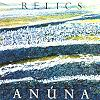

Celtic Lyrics Corner > Artists & Groups > Anúna > Relics
|
 |
Relics
(2003) |
| Tracks : |
1.
Hinbarra
2. Sleepsong 3. Cormacus Scripsit 4. Silent, O Moyle 5. The Raid 6. Bryd One Brere 7. Goltraí 8. Media Vita 9. Under The Greenwood 10. Sanctus 11. Pater Noster 12. Aisling 13. Sí Do Mhaimeo Í 14. Wind On Sea |